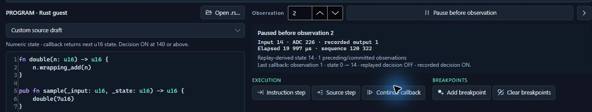

Forth word
DUP copies the number at the top of the stack. + takes the two numbers off and leaves their sum.
[7] → [7 7] → [14]
Kajo Lab 101
Give 7 to a Forth word and a Rust function. Run both at the same observation in Kajo Lab and find 14 in each.
Use an existing Windows copy of Kajo Lab for the app steps. Anyone can try the prediction exercise on this page.
DUP copies the number at the top of the stack. + takes the two numbers off and leaves their sum.
[7] → [7 7] → [14]
The function names the input n. It returns n.wrapping_add(n), which adds 7 to itself in this example.
double(7u16) → 14
Lab runs Forth in a Forth virtual machine. A separate engine runs the Kajo CPU instructions that Lab’s compiler produces from a supported subset of Rust. The Rust guest is the program that runs on that CPU inside Lab.
Open Night-Light-Pico.capture in Kajo Lab using Open recording or session…. An observation is one saved sensor reading and its recorded output. Lab runs a short piece of code called a callback at that observation. Both drafts use the fixed test number 7, so you can leave the Pico unplugged.
In Program, choose Forth and paste these two lines into the Experimental Forth editor, replacing its contents.
: double ( n -- 2n ) DUP + ;
: on-sample 7 double ;[7] to [7 7] to [14].With the Night-Light-Pico.capture tab selected, switch to Program → Rust guest. Select Slew-limited knob · ON at 140 so Lab will show the result as a number. Check that the Replay laboratory header shows Night-Light-Pico.capture and 1,751 observations. If it shows another recording, choose Use Signals recording to bring in the selected Night Light capture. Then replace the preset source with the draft below.
fn double(n: u16) -> u16 {
n.wrapping_add(n)
}
pub fn sample(_input: u16, _state: u16) -> u16 {
double(7u16)
}sample and u16 mean?Lab calls sample at each observation. Its two parameters would let it use the sensor input and previous state. This exercise calls double with a fixed number instead. u16 is a whole number from 0 to 65,535, and 7u16 writes the number and its type together. With these small inputs, wrapping_add gives the ordinary sum.
Forth reports 14 as the result of observation 1. The Rust callback also returns 14, which Lab carries forward as the state for observation 2. Lab separately shows the Rust decision as OFF because 14 is below the preset threshold of 140. The recorded decision is still ON. Compare the computed numbers for this exercise.

Change 7 double to 9 double in Forth and double(7u16) to double(9u16) in Rust. Predict what each draft will produce, then run observation 1 again. The questions also work on this page without Lab or JavaScript.
Both produce 18. In Forth, DUP leaves [9 9], and + leaves [18]. In Rust, n.wrapping_add(n) computes 9 + 9 and returns 18.
Both produce 6. The instructions run the same rule with a different input. The saved observation still has its original recorded output.
DUP and + in the Forth standard.u16::wrapping_add in the standard library.